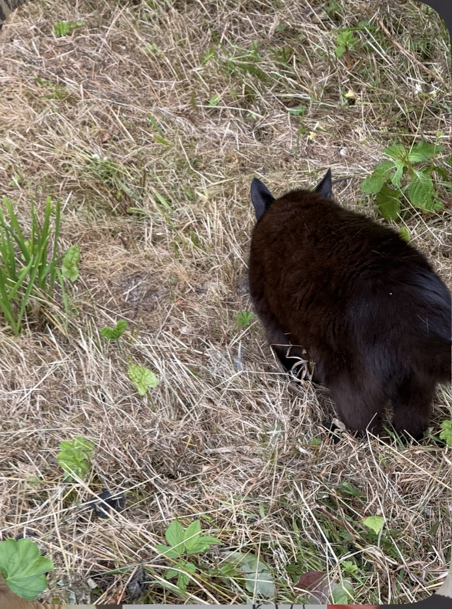

Freud
Freud to starszy czarny kocur. Lubi wygrzewać się w trawie, obchodzić swój ogród i obserwować ptaki. Spokojny i przyjazny.

Klikaj i odkrywaj — za każdym razem coś nowego o naszych mruczących przyjaciołach.
Freud to starszy czarny kocur. Lubi wygrzewać się w trawie, obchodzić swój ogród i obserwować ptaki. Spokojny i przyjazny.
